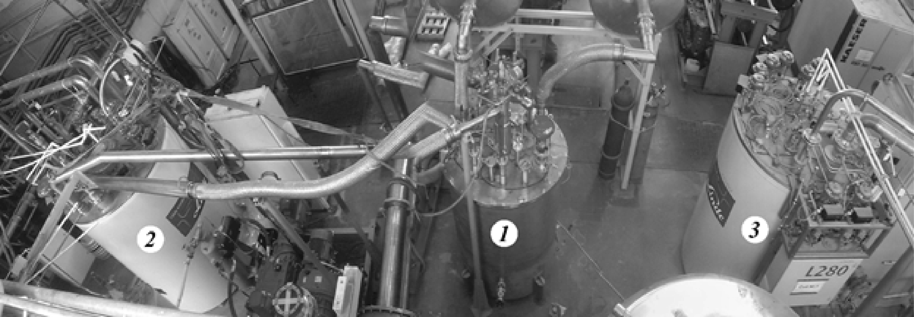
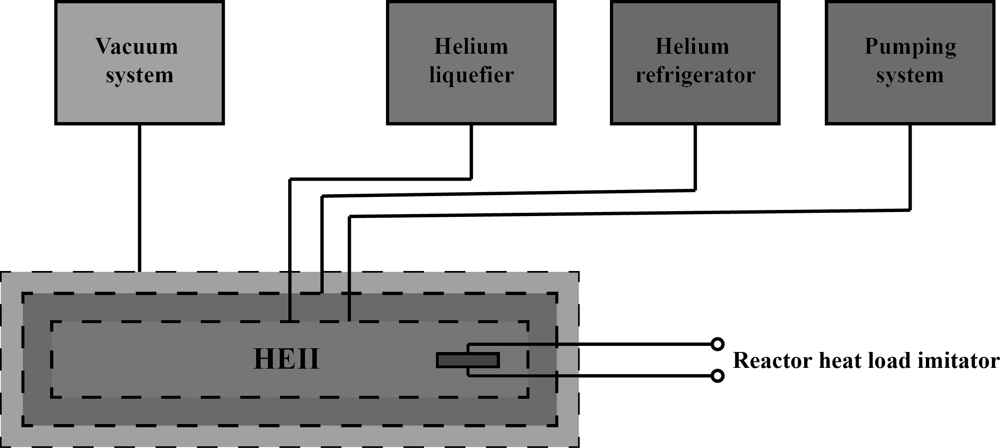
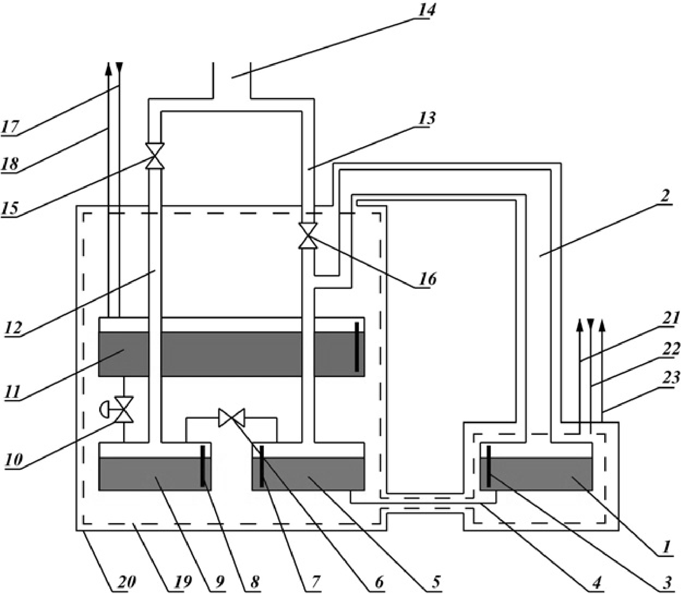
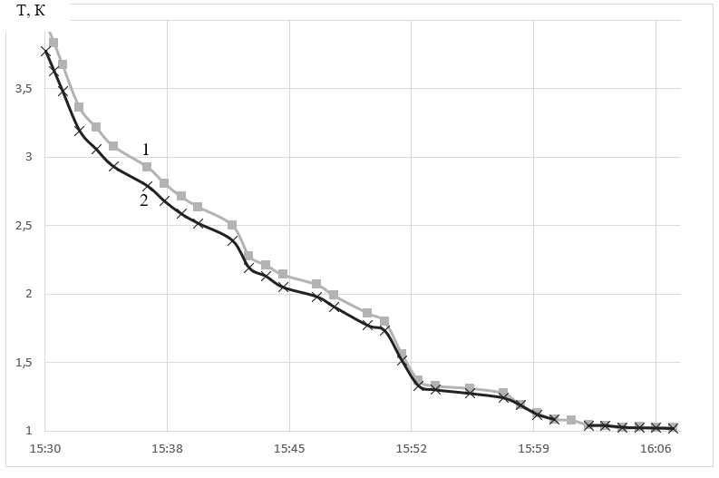

Введение
Ультрахолодные нейтроны (УХН) обладают свойством отражаться от вещества при любых углах падения, поэтому их можно хранить в материальных ловушках десятки и сотни секунд. Это открывает уникальным возможности изучения самого нейтрона – измерения электрического дипольного момента нейтрона, что имеет принципиально важное значение для изучения фундаментальных взаимодействий в физике элементарных частиц [1].
В настоящее время данное направление исследований с ультрахолодными нейтронами активно развивается в мире с очевидной конкуренцией национальных приоритетов. Если в 80-х годах было только два центра – ПИЯФ (Гатчина) и ИЛЛ (Гренобль), где проводились исследования по поиску ЭДМ нейтрона с помощью УХН, то сейчас их уже девять. Точность измерений определяется интенсивностью источника ультрахолодных нейтронов. Поэтому там, где будет создан наиболее интенсивный источник УХН, там и будет получен наиболее точный результат, а возможно открыт ЭДМ нейтрона, что будет важнейшим событием в физике.
Если в физике высоких энергий определяющий параметр это энергия протонов на коллайдерах, то в нашем случае это интенсивность пучка УХН.
Наша цель состоит в создании самого интенсивного источника УХН на реакторе ВВР-М ПИЯФ НИЦ КИ и проведение измерений ЭДМ нейтрона с точностью 3∙10-28 е∙см.
Использование сверхтекучего гелия для производства ультрахолодных нейтронов
Метод получения ультрахолодных нейтронов (УХН) на реакторе ВВР-М в ПИЯФ будет основан на эффекте их производства и накопления в сверхтекучем 4Не из-за особенностей этой квантовой жидкости [2]. При имеющимся технологическом оснащении и инфраструктуре на реакторе ВВР-М, температуру гелия в камере источника возможно будет поддерживать при температуре 1,2-1,3 К прямой вакуумной откачкой паров 4Не. При этом прогнозируемая тепловая нагрузка на сверхтекучий гелий ожидается равной 20 Вт. Время хранения нейтронов при температуре Т=1,2К в камере источника УХН оценивается в 30 сек, а при температуре Т=1,33К в 15 сек. Время выхода УХН из источника в нейтроновод составляет приблизительно 5 сек, поэтому эффект зависимости интенсивности источника от температуры в указанном диапазоне будет составлять приблизительно 10%.
Сверхтекучий гелий обладает колоссальной прозрачностью для нейтронов низких энергий. Кривая Ландау, связывающая энергию и импульс возбуждений (фононов, ротонов) в сверхтекучем гелии пересекается с кривой E=p2/2m для нейтрона в одной точке. Эта точка соответствует энергии возбуждения (в единицах температуры) 12 К. Это означает, что УХН может “поглотить” только фонон с энергией 12 К. Таких фононов при температуре сверхтекучего гелия 1 К практически нет, этим и объясняется исключительная прозрачность сверхтекучего гелия для УХН. Ультрахолодные нейтроны “рождаются” в гелии из холодных нейтронов с длиной волны 9 Å или энергией 12 К, которая как раз равна энергии фонона, т.е. холодный нейтрон возбуждает фонон и сам практически останавливается, становясь ультрахолодным. Холодные нейтроны проникают через стенку ловушки, а ультрахолодные отражаются, поэтому возможен эффект накопления УХН до плотности определяемой временем хранения в ловушке с гелием.
Количественное производство УХН зависит от интенсивности реакторного нейтронного потока и эффективности криогенного замедлителя (конвертора). Однако, стремление разместить замедлитель с криогенной температурой в высоком нейтронном потоке на реакторе, наталкивается на проблему отвода радиационного тепла. Чем ниже температура замедлителя, тем сложнее проблема отвода теплоты.
Эксперименты по накоплению УХН в ловушках со сверхтекучим гелием успешно выполнены на пучках холодных нейтронов [3,4]. Уже на пучке удалось получить плотность УХН сравнимую с плотностью УХН, выведенной от источника в реакторе. Расходимость пучка нейтронов очень мала по отношению к 4π;. В условиях облучения 4π можно выиграть 3-4 порядка величины. Возникает вопрос: в каких условиях облучения может работать источник на основе сверхтекучего гелия, какую мощность можно снимать при температуре около 1 К? Мы можем ставить задачу о удалении мощности 20 ватт при температуре 1.2 К, тогда эта задача решается с помощью доступного гелиевого ожижителя с производительностью 96 литров жидкого гелия в час и с помощью системы вакуумной откачки паров гелия, чтобы получить температуру 1.2 К. Для успешного решения задачи нужно найти компромисс между уровнем тепловыделения и нейтронным потоком.
На реакторе ВВР-М ПИЯФ имеются весьма подходящие условия для решения такой задачи. Это наличие тепловой колонны реактора, которая представляет собой канал большого диаметра (1 метр), примыкающий к активной зоне реактора [5-6]. Такой диаметр канала позволяет расположить мощную свинцовую защиту от γ-излучения активной зоны реактора, графитовый предзамедлитель, замедлитель из жидкого дейтерия при температуре 20 К, чтобы получать холодные нейтроны, и наконец, собственно источник УХН на основе сверхтекучего гелия при температуре 1.2 К.
Для проверки практической реализации проекта была создана полномасштабная технологическая модель источника, где радиационная тепловая нагрузка заменена электрическим нагревателем.
Полномасштабная модель источника УХН
Для отладки режимов работы криогенного и вакуумного оборудования для технологического комплекса УХН, а также для получение изотопно-чистого He4, в ПИЯФ была смонтирована полномасштабная технологическая модель источника ультрахолодных нейтронов со сверхтекучим гелием [7-8] (Рис. 1).
Рис. 1. Полномасштабная технологическая модель источника УХН. (1 – криостат, 2 – гелиевый рефрижератор TCF-50, 3 – гелиевый ожижитель L-280)
Рис. 2 приводит структурную схему основного технологического оборудования источника.
Рис. 2. Блок – схема технологического оборудования источника.
Работа источника обеспечивается четырьмя основными независимыми установками:
- Гелиевый рефрижератор;
- Гелиевый ожижитель;
- Вакуумная установка;
- Защитный вакуум
Гелиевый рефрижератор, мощностью 3000 Вт, работает на температурном уровне 15 К и обеспечивает экранирование низкотемпературной части источника от теплопритоков извне, а в перспективе будет ожижать жидкодейтериевый предзамедлитель внутри которого будет помещена камера источника.
Гелиевый ожижитель работает на температурном уровне 4,2 К. Ожижитель обеспечивает заполнение системы жидким гелием, подачу жидкого гелия взамен испарившегося. Производительность ожижителя достигает 96 л/час.
Вакуумная установка работает при давлении 50 Па и обеспечивает удаление паров гелия для снижения его температуры до 1,2К. От тепловой нагрузки 20 Вт в источнике будет испаряться порядка 1 г/с гелия. Сделаем приблизительные оценки для гелия, которым необходимо пополнять источник во время работы. Делая допущение, что энтальпия гелия при 1К равна 0, при энтальпии гелия при 4.2К равной 9,6 Дж/г от гелия с расходом 1 г/с, поступившего на охлаждение до 1К, потребуется отводить 9,6 Вт. Таким образом, помимо испарения 1 г/с от прямой тепловой нагрузки, необходимо еще 0,5 г/с для понижения температуры гелия до 1К. Суммарная нагрузка на вакуумные насосы, которая складывается из паров образующихся за счёт нагрева и паров которые надо удалить для охлаждения жидкости (33% от общей нагрузки) составит 0,375 моль/с или 1,5 г/с.
Турбомолекулярный насос поддерживает высокий защитный вакуум всей низкотемпературной части ниже 10-5 торр.
Все процессы получения сверхнизких температур осуществляются в криостате [9]. Принципиальную низкотемпературную схему источника УХН представляет Рис. 3. Камера модели источника УХН на реакторе ВВР-М (1) имеет объем равный 35 л. Камера заполнена сверхтекучим гелием при температуре 1,2 К. К камере подходит труба (2) длиной около 3 м. Эта труба служит для откачки паров испарившегося гелия, а в последствии будет служить нейтроноводом УХН. Трубопровод откачки (13) подходит к «нейтроноводу» (2) вертикально и отводит пары гелия из ванны модели источника УХН (1) и нижней ванны (5).

Рис. 3. Внутренне исполнение криостата.
1 – модель источника, 2 – трубопровод откачки модели источника, 3 – уровнемер модели источника, 4 – труба
заливки
модели, 5 – нижняя ванна с температурой 1,2 К, 6 – вентиль подачи гелия в нижнюю ванну, 7 – датчик уровня
жидкости в
нижней ванне, 8 – датчик уровня жидкости в промежуточной ванне, 9 – промежуточная ванна с температурой 1,2 К,
10 –
вентиль подачи гелия в промежуточную ванну, 11 – верхняя ванна с температурой 4.2 К, 12 – трубопровод вакуумной
откачки
промежуточной ванны, 13 – трубопровод вакуумной откачки нижней ванны и модели источника, 14 – общий трубопровод
откачки, 15, 16 – запорные вентиля системы вакуумной откачки, 17 – заливка верхней ванны жидким гелием с
температурой
4.2 К, 18 – отвод паров гелия, 19 – тепловой экран с температурой 15 К, 20 – вакуумный кожух, 21 – отвод
газообразного
гелия от экрана, 22 – подача газообразного гелия на охлаждение теплового экрана, 23 – откачка вакуумного кожуха
Жидкий гелий поступает по трубопроводу (17) от гелиевого ожижителя в верхнюю ванну (11) с температурой 4,2 К и оттуда через регулировочный вентиль (10) сливается в промежуточную ванну (9) с температурой 1,2 К. Контроль уровня жидкого гелия в верхней ванне осуществляется по показаниям уровнемера. Испарившиеся в ванне (11) пары гелия возвращаются в ожижитель через (18). Объем сверхтекучего гелия в нижней ванне (5) контролируется при помощи криогенного вентиля (6) и гелиевого уровнемера (7), по сигналу которого происходит заполнение/опустошение нижней ванны (5) и ванны модели источника УХН (1). Нижняя ванна (5) и камера источника (1) представляют собой сообщающиеся сосуды, соединенные трубкой (4), с одинаковыми уровнями, в них поддерживается одинаковое давление.
Вся низкотемпературная часть окружена тепловым экраном (19) с температурой 15К и заключена в вакуумную оболочку (20). Тепловой экран (19) охлаждается циркулирующим гелием от рефрижератора (21, 22). Вакуумная оболочка откачивается турбомолекулярным насосом через (23).
Из камеры (5) по трубопроводу (13) и из промежуточной ванны с жидким гелием по трубопроводу (12) производится откачка паров гелия. Вакуумный трубопровод (13) поддерживает в нижней ванне (5) давление, равное давлению в камере источника (1). Для снижения теплопритоков извне трубопроводы откачки (12, 13) проходят через ванну (11) с температурой 4,2 К, а затем объединяются в один трубопровод (14). Давление паров гелия в низкотемпературной части поддерживается вакуумной установкой на уровне 55 Па при помощи пневматических вентилей (15, 16).
Запуск полномасштабной модели источника УХН
Вывод оборудования в рабочий режим состоит из 5ти последовательно выполненных этапов:
- 1- Очистка и подготовка гелия
- 2- Запуск рефрижератора TCF-50. Получение температуры защитных экранов Т=15К.
- 3- Запуск ожижителя L-280. Получения жидкого гелия, заполнение ванн криостата.
- 4- Запуск очистителя. Очиститель используется для очистки поступающего на ожижения гелия.
- 5- Запуск вакуумной системы откачки. Получение температуры Т=1К.
В общем этот процесс занимает 50 часов. Большая часть времени отведена на охлаждения металлических конструкций внутри холодильных машин, криостата и модели источника УХН.
Была замерена производительность ожижителя и очистителя для определения возможности бесперебойной работы всего комплекса (замеры производились по расходу газообразного гелия). Экспериментальные данные приведены в Таблица 1:
Таблица 1 – Производительность технологического комплекса по жидкому гелию
| Производительность ожижителя | 45 м3 в час |
| Скорость очистки | 120 м3 в час |
| Время регенерации очистителя | 55 мин |
Таким образом за 2 часа работы очистителя (1 час работы + 1 час регенерации) в ресивер поступает 120 м3 чистого гелия, которого хватает более чем на 2,5 часов бесперебойной работы.
Время необходимое за заполнение ванны источника на 80% составляет 3 часа.
Произведены замеры испаряемости жидкого гелия в течении 10 часов (Таблица 2, Рис. 4. Замеры испаряемости жидкого гелия). Испаряемость гелия во всех ваннах получилась линейной и связана с теплопритоками по тепловым мостам конструкций криостата, а также из-за конвекции газообразного теплого гелия через откачные трубопроводы.
Таблица 2 – Замеры испаряемости жидкого гелия
| см/час | г/час | л/час (жидкого) | м3/час (газ) | |
|---|---|---|---|---|
| Верхняя ванна | 0,1938 | 80,2 | 0,642 | 0,45 |
| Промежуточная ванна | 0,1576 | 24,7 | 0,198 | 0,14 |
| Сливная ванна+источник | 0,1562 | 47,3 | 0,378 | 0,265 |
| Всего | 152,2 | 1,18 | 0,855 |
Рис. 4. Замеры испаряемости жидкого гелия
1- Объединенные сливная ванна и ванна модели источника УХН, 2- верхняя ванна, 3- промежуточная ванна
Для получения сверхнизких температур в комплексе применяется метод вакуумной откачки паров гелия. Для этого последовательно запускаются форвакумная группа насосов, состоящая из 3х насосов: 2х GS600 и EH4200, и насосы большой мощности: четыре HV30000. Перед пуском каждого форвакуумного насоса делается 5ти минутная пауза, необходимая откачному компрессору BAUER для закачки гелия из газгольдера в баллоны.
В общей сложности для получения температуры 1,021К необходимо 36 минут (Рис. 5). Расход гелия в промежуточной ванне составляет 14 литров (43%), в сливной ванне и ванне источника 20 литров (42%).

Рис. 5. Получение температуры Т=1К
1- температура в промежуточной ванне, 2- температура в ванне модели источника УХН
Проведение эксперимента. Результаты
Цель эксперимента: определить основные термодинамические параметры сверхтекучего гелия при подведении различной тепловой нагрузи (0Вт, 15Вт, 30Вт, 60Вт) к ванне модели источника УХН. Данная тепловая нагрузка полностью моделирует тепловую нагрузку от реактора ВВР-М, работающего на разном уровне мощности.
Нагрузка подается, от двух источников постоянного тока, с выдержкой 10 мин на каждом уровне мощности. 10 минут оказывается достаточным для стабилизации температуры внутри ванн криостата и ванны источника УХН. В результате проведенного эксперимента была получена температурная зависимость от подаваемой тепловой нагрузки на сверхтекучий гелий. При этом велись замеры таких параметров как: давление на входе в вакуумный насос, нагрузка на вакуумные насосы. Результаты эксперимента приведены на рисунке 6 и в таблице 3.
Таблица 3 – Результаты эксперимента на полномасштабной модели источника УХН
| Тепловая нагрузка на ванну ИУХН, Вт | Температура в ванне ИУХН, К | Нагрузка на вакуумный насос, %max |
|---|---|---|
| 0 | 1,064 | 13 |
| 15 | 1,282 | 24,5 |
| 30 | 1,325 | 36,4 |
| 60 | 1,371 | 58,8 |
Рис. 6. Температурная зависимость от подаваемой тепловой нагрузки на модель источника УХН
Результаты показывают нелинейный рост температуры сверхтекучего гелия в ванне модели источника УХН от подаваемой тепловой нагрузки. Определяющим фактором в определении температуры в источнике является давление насыщенных паров гелия, которое складывается из давлении на входе в вакуумный насос и гидравлического сопротивления откачных трубопроводов. При этом зависимость температуры от давления гелия при 1К<Т<1,4К хорошо описывается уравнением T=0,7217·P0,1164 [10], что и приводит к первоначальному скачку температуры при подводимой тепловой мощности P=15 Вт.
Заключение
В результате работ проведенных на полномасштабной модели источника УХН были запущены основные установки технологического комплекса: гелиевый ожижитель L-280, гелиевый рефрижератор TCF-50, вакуумная система откачки. Режимы работы всего оборудования согласованы между собой, с целью получения сверхтекучего гелия и удержания сверхнизких температур (порядка 1К) при подводимой тепловой нагрузке.
В результате экспериментов на полномасштабной модели источника УХН были получены реальные температуры сверхтекучего гелия при тепловой нагрузке вплоть до 60Вт в то время как расчетное значение тепловой нагрузки на реакторе ВВР-М оценивается в 20Вт.
Производительности ожижителя достаточно для того чтобы за время опустошения верхней ванны криостата, почистить и ожижить необходимое количество гелия для бесперебойной работы технологического комплекса.
Получена температурная зависимость от подводимой тепловой нагрузки. Наибольшая температура гелия Т=1,371 была зафиксирована при тепловой нагрузки 60Вт. Таким образом, запас мощности вакуумной системы откачки составляет более чем 200%. Даже при столь больших нагрузках на модель источника УХН, гелий продолжает оставаться в сверхтекучей фазе.
Была экспериментально обоснована возможность установки источника УХН на реактор ВВР-М.
Исследование выполнено в ФГБУ «ПИЯФ» за счет гранта Российского научного фонда (проект №14-22-00105).
Литература
- А.П. Серебров. Фундаментальные исследования с ультрахолодными нейтронами. Вестник Российской академии наук. 2009, T. 79. №1. С. 23-35
- А.И. Ахиезер, И. Я. Померанчук. О рассеянии нейтронов с энергией несколько градусов в жидком гелии II. ЖЭТФ, 1946, Т. 16, С. 391
- Golub R., Jewell C., Ageron P., Mampe W et al. Operation of a superthermal ultra-cold neutron source and the storage of ultra-cold neutrons in superfluid helium4 Phys. B – Condensed Matter. 1983. V. 51. P. 187.
- Yoshiki H., Sakai K., Ogura M. et al. Observation of ultracold-neutron production by 9-Å cold neutrons in superfluid helium. Phys. Rev. Lett. 1992. V. 68. P. 1323.
- А.П. Серебров, А.К. Фомин, А.Г. Харитонов, и др. Высокоинтенсивный источник ультрахолодных нейтронов на реакторе ВВР-М для научных исследований в области фундаментальной физики Вестник СПбГУ. Серия 4. 2015. Т. 2 (60). В. 1. С. 27-41
- A. P. Serebrov. Supersource of Ultracold Neutrons at the WWR-M Reactor and the Program of Fundamental Research in Physics. ISSN 10637745, Crystallography Reports, 2011, V. 56, No. 7. PP. 1230–1237
- А.П. Серебров, А.К. Фомин, А.Г. Харитонов и др. Высокоинтенсивный источник ультрахолодных нейтронов на реакторе ВВР-М для научных исследований в области фундаментальной физики Вестник СПбГУ. Серия 4. 2015. Т. 2 (60). В. 1. С. 27-41
- А.П. Серебров, А.К. Фомин, А.Г. Харитонов и др Высокоинтенсивные источники ультрахолодных нейтронов на реакторах ВВР-М и ПИК Кристаллография. 2016. Т.61, №1, С.157-162
- А. А. Захаров, А. П. Серебров. Новый источник холодных и ультрахолодных нейтронов на реакторе ВВР-М. II.Низкотемпературная часть. Препринт ПИЯФ-2812, Гатчина, 2009. 24 с.
- М.П. Малков. Справочник по физико-техническим основам криогеники. М., Энергоатом-издат,1973г. С. 104-105